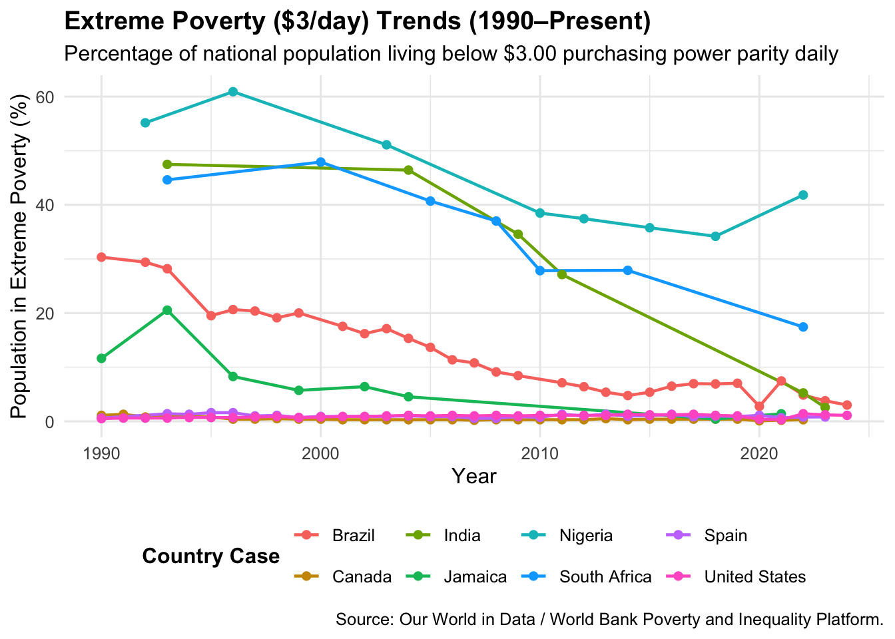
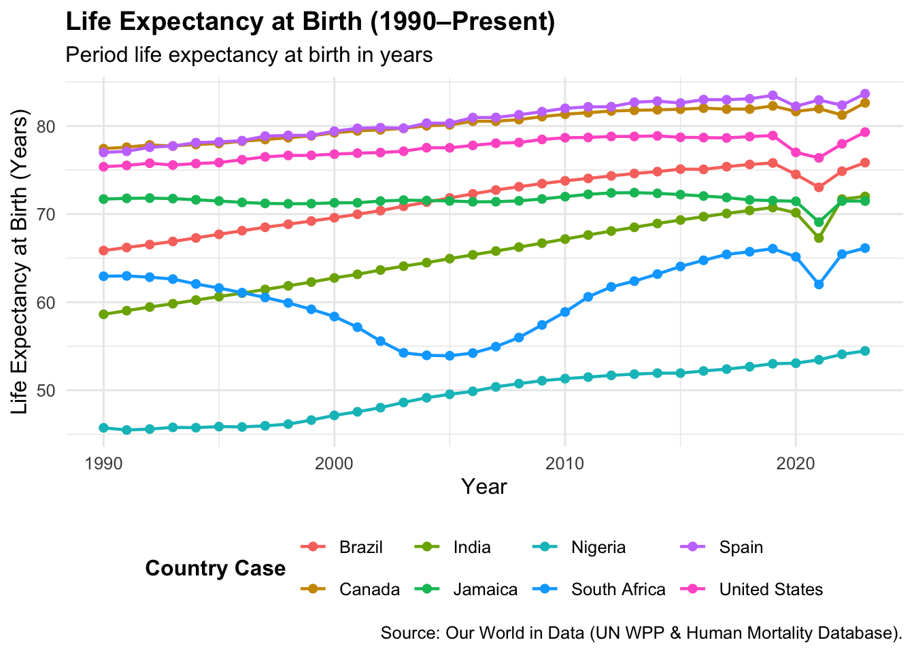

An Introduction to Computational Methods for Social Scientists
Author
Neena Abimbola Albarus
1 Introduction: The Computational Approach to Social Science
Welcome to your first data lab in this series!
In political science, sociology, social work and development economics, we often talk about abstract ideas like state capacity, social welfare and development in general. But as empirical social scientists, we move from abstract concepts to numerical measurements. To do this, we must learn how to observe, measure and then critically evaluate social phenomena using empirical evidence.
In this workbook, we are going to explore computational social science using R. We will examine three pillars of human development across eight very different national political economies:
Extreme Poverty (Material Deprivation)
Educational Attainment (Human Capital Formation)
Life Expectancy (Population Health and Public Infrastructure)
While working through this document, you will learn how to inspect raw data files, handle missing survey values, write data transformation pipelines using dplyr, and create clean, academic-quality charts using ggplot2.
A Note on Data Hygiene: We never edit raw data files manually. Every cleaning, filtering, and transformation step must be executed through code. That way, our work stays transparent, reproducible and easy for independent researchers to verify!
2 Module 1: Operationalising & Auditing Material Deprivation
2.1 Conceptualisation & Operationalisation
Before writing any code, let us break down how quantitative research works. Social scientists separate measurement into two key steps:
Conceptualisation Defining the theoretical idea we want to study (e.g., “material poverty”).
Operationalisation Choosing the exact numerical metric we will use to measure that idea in the real world.
To compare poverty across international borders, we cannot simply measure household income in local currencies. A household earning 500,000 Nigerian Naira per month experiences a completely different standard of living than one earning 500,000 Jamaican Dollars or 500,000 Indian Rupees.
To solve this, international organisations use Purchasing Power Parity (PPP). PPP is an economic adjustment that accounts for local price levels. It calculates how much local currency you need to buy the exact same basket of goods and services in different countries.
In this module, we operationalise “extreme poverty” as the percentage of a nation’s population living on less than $3.00 per day in PPP-adjusted US dollars.
2.2 Step 1: Importing Raw Data into R
Let us start by loading our raw CSV dataset into R using the read_csv() function from the readr package.
# Read raw poverty dataset into an R object named poverty_datapoverty_data <-read_csv("/Users/yawdgyal/Desktop/R for github/social-science-report-template/data/poverty_data.csv")
Rows: 59372 Columns: 6
── Column specification ────────────────────────────────────────────────────────
Delimiter: ","
chr (3): Entity, Code, World region according to OWID
dbl (3): Year, Share of population in poverty ($3 a day), Population
ℹ Use `spec()` to retrieve the full column specification for this data.
ℹ Specify the column types or set `show_col_types = FALSE` to quiet this message.
Before doing any maths or filtering, always inspect the shape of your dataset. We can run glimpse(), which gives us a read-only view of the dataset’s dimensions and column types.
# Inspect dataset dimensions, column names, and data typesglimpse(poverty_data)
Rows: 59,372
Columns: 6
$ Entity <chr> "Afghanistan", "Afghanista…
$ Code <chr> "AFG", "AFG", "AFG", "AFG"…
$ Year <dbl> -10000, -9000, -8000, -700…
$ `Share of population in poverty ($3 a day)` <dbl> NA, NA, NA, NA, NA, NA, NA…
$ Population <dbl> 14737, 20405, 28253, 39120…
$ `World region according to OWID` <chr> "Asia", "Asia", "Asia", "A…
2.3.1 Understanding R Data Types
Take a look at the labels next to each column name in the output above. In R, every variable has a data type (or class), which tells R what you are allowed to do with it:
chr (Character) Text strings. In our dataset, Entity and Code are character variables. You cannot do maths on character data!
dbl (Double) or int (Integer) Numbers. dbl holds decimal numbers and int holds whole numbers. In our dataset, Year and the poverty percentage column are numeric.
lgl (Logical) Boolean values (TRUE or FALSE).
Note: Beginners often get stuck because numbers were accidentally imported as text (chr) due to symbols or formatting in the raw file. If a column with numbers is classified as chr, functions like mean() or sum() will crash. Always check that quantitative metrics imported as dbl or int before moving forward!
2.4 Step 3: Auditing Units of Analysis & Missing Data
Large datasets from sources like Our World in Data or the World Bank are expansive, but they often mix individual countries with regional aggregates or global averages (like "World", "Sub-Saharan Africa", or "High income").
If you accidentally include "World" alongside "Jamaica" or "Nigeria", regional averages will get treated as individual countries, which distorts the comparative analysis!
Let us run two quick audits: 1. Count how many unique entities exist in the raw global file. 2. Check how many years of actual survey data we have versus missing values (NA) for our eight target countries since 1990.
# Audit 1: Count the total number of unique entities present in the raw filepoverty_data |>distinct(Entity) |>nrow()
[1] 292
# Audit 2: Evaluate missingness across our target comparative unitspoverty_data |>filter(Entity %in% countries_to_compare, Year >=1990) |>group_by(Entity) |>summarise(total_years =n(),observed_surveys =sum(!is.na(`Share of population in poverty ($3 a day)`)),missing_surveys =sum(is.na(`Share of population in poverty ($3 a day)`)) )
# A tibble: 8 × 4
Entity total_years observed_surveys missing_surveys
<chr> <int> <int> <int>
1 Brazil 35 31 4
2 Canada 34 33 1
3 India 34 6 28
4 Jamaica 34 8 26
5 Nigeria 34 8 26
6 South Africa 34 7 27
7 Spain 34 30 4
8 United States 35 35 0
2.4.1 Why Is Data Missing? A Global South Perspective
Look at the summary table from Audit 2. Notice how the amount of missing data varies depending on the country.
In social science, missing data is rarely random:
Missingness by Design Wealthier nations like Canada and the United States show lots of missing observations at the $3.00/day poverty line. This is not a mistake! Statistical agencies in rich countries do not field household surveys for extreme absolute poverty because absolute deprivation falls below measurable survey thresholds there.
Structural Capacity & Fiscal Constraints Developing nations in the Global South often have multi-year gaps between survey points. National household censuses are expensive and logistically demanding. Foreign debt servicing, structural adjustment programmes and fiscal austerity frequently constrain state statistical offices in post-colonial economies, limiting their capacity to run annual household surveys.
2.5 Step 4: Building the Data Transformation Pipeline
Now that we have audited our file, let us build a clean data pipeline using dplyr.
We can use R’s native pipe operator (|>). The pipe takes whatever object is on its left and passes it as the first input into the function on its right. When reading code, translate |> in your head as “AND THEN”.
# Construct clean working dataset for Module 1poverty_countries <- poverty_data |># Step A: Keep post-1990 observationsfilter(Year >=1990) |># Step B: Drop years with missing survey data using the exclamation mark (!)filter(!is.na(`Share of population in poverty ($3 a day)`)) |># Step C: Keep only our target countriesfilter(Entity %in% countries_to_compare) |># Step D: Sort rows by country and yeararrange(Entity, Year)
2.6 Step 5: Visualising Poverty Dynamics with ggplot2
Now that the dataset is confirmed to be clean, we can build a plot using ggplot2.
ggplot2 uses the Grammar of Graphics, which builds charts in layers. Notice that while dplyr joins functions using the pipe (|>), ggplot2 connects visual layers using the plus sign (+).

Figure 1: Percentage of national population living on less than $3.00 daily (PPP adjusted) across eight nations (1990–Present).
2.7 Global South Analytical Insights of Poverty Dynamics
Take a close look at Figure 1.We can examine underlying structural conditions:
Floor Effects & Western-Centric Metrics Notice how Canada and the United States flatline at \(0\%\). This demonstrates a measurement floor effect. The $3/day line is built to measure global absolute deprivation and fails to reflect relative poverty, precarious labour, or systemic inequality in the Global North.
State-Led Interventions vs. Global Market Vulnerability Compare the steep poverty declines in India and Brazil against the more persistent rates in Nigeria and Jamaica:
Brazil- The dramatic poverty reduction during the 2000s highlights the power of targeted, state-led social protection policies such as Bolsa Família, combined with favorable global commodity terms of trade.
India- Rapid growth led to substantial reductions in headcount poverty, though high structural informal employment means large population segments remain vulnerable to economic shocks.
Jamaica & Nigeria- Small island developing states (SIDS) and oil-dependent economies face persistent global terms-of-trade shocks, high foreign debt burdens and vulnerable domestic supply chains that can often stall poverty reduction even during periods of national GDP growth.
3 Module 2: Measuring Human Capital Formation
3.1 Stock vs. Flow Metrics in Education
Now let us switch gears to education.
In public policy and economics, education is viewed as an investment in human capital which is the total stock of skills, knowledge and overall capacity and capabilities within a workforce. Higher human capital is closely linked to technological adoption and sovereign economic productivity.
When looking at education metrics, social scientists divide them into two categories:
Flow Metrics- Measures of current participation (e.g. primary school enrollment rates this year). Flow metrics change quickly when policies change, but they do not tell you the skill level of the overall adult workforce.
Stock Metrics- Measures of total accumulated education over time (e.g. average years of schooling completed by adults aged 15+). Stock metrics change slowly because they reflect decades of historic educational investment.
In this module, we will analyse Mean Years of Schooling (a stock metric) to examine long-term human capital accumulation.
3.2 Data Pipeline: Cleaning Variable Names
Public datasets often come with long and messy column headers that include spaces or citations. We can use rename() from dplyr to convert messy column titles into clean, simple variable names.
# Import education dataseteducation_data <-read_csv("/Users/yawdgyal/Desktop/R for github/social-science-report-template/data/education_data.csv")
Rows: 3699 Columns: 4
── Column specification ────────────────────────────────────────────────────────
Delimiter: ","
chr (2): Entity, Code
dbl (2): Year, Average years of schooling
ℹ Use `spec()` to retrieve the full column specification for this data.
ℹ Specify the column types or set `show_col_types = FALSE` to quiet this message.
Figure 2: Average years of formal education accumulated by adults aged 15+ across eight nations (1990–Present).
3.4 Global South Analytical Insights: Educational Catch-Up & Legacies
Check out the educational trajectories displayed in Figure 2:
Colonial Legacies & Baseline Inequality Notice the substantial initial gap in 1990 between post-industrial economies (Canada, United States) and post-colonial societies (India, Nigeria, South Africa, Jamaica). Colonial-era educational systems were often extractive and restrictive, moreso designed to train minor administrative staff rather than foster broad-based national human capital. What might the purpose of education in your region be now?
Post-Colonial Educational Expansion Despite historical disadvantages, Global South nations demonstrate steady, upward educational expansion post-1990. State-funded initiatives, global campaigns like the Millennium Development Goals (MDGs) and domestic investments have expanded access to schooling across Latin America, South Asia, and Sub-Saharan Africa.
Quantity vs. Quality Disconnect While mean years of schooling (a quantitative stock metric) shows clear convergence, social scientists from the Global South emphasise that years in school do not automatically equal learning outcomes. Under-resourced public schools, high student-to-teacher ratios and brain drain (the emigration of skilled graduates) mean that educational expansion must be paired with structural economic opportunities locally.
4 Module 3: Evaluating Population Health (Life Expectancy)
4.1 Life Expectancy as an Overall Health Metric
Our third dimension is population health, measured through Life Expectancy at Birth.
In comparative politics and development sociology, life expectancy is considered a primary composite health indicator. A country cannot achieve high average life expectancy without:
Clean water, working sanitation and reliable electricity.
Functional healthcare networks, including basic immunisations and maternal care.
Food security and solid nutrition.
Relative protection from violence, political instability, and environmental crises.
4.2 The Health Data Pipeline
# Import life expectancy datasetlife_exp_data <-read_csv("/Users/yawdgyal/Desktop/R for github/social-science-report-template/data/life_expectancy_data.csv")
Rows: 21565 Columns: 4
── Column specification ────────────────────────────────────────────────────────
Delimiter: ","
chr (2): Entity, Code
dbl (2): Year, Life expectancy
ℹ Use `spec()` to retrieve the full column specification for this data.
ℹ Specify the column types or set `show_col_types = FALSE` to quiet this message.
# Clean life expectancy datalife_exp_countries <- life_exp_data |>filter( Year >=1990, Entity %in% countries_to_compare ) |>rename(life_expectancy =4) |>filter(!is.na(life_expectancy)) |>arrange(Entity, Year)
4.3 Visualising Health Trajectories & Major Shocks

Figure 3: Life expectancy at birth in years across eight comparative cases (1990–Present).
4.4 Global South Analytical Insights: Health Equity & Systemic Inequity
Figure 3 highlights how global health inequities and external mortality shocks manifest in population data:
The HIV/AIDS Crisis in South Africa & Global Health Inequity Look at South Africa’s line between 1990 and 2005, where life expectancy plummeted from ~63 years down to ~53 years. This catastrophic drop reflects the HIV/AIDS epidemic. Crucially, from a Global South analytical perspective, the delayed recovery was exacerbated by international patent restrictions and high pricing on antiretroviral drugs by Western pharmaceutical corporations. The rapid recovery post-2005 demonstrates the power of state-provided generic antiretroviral therapy and global health solidarity.
Global Vaccine Equity & the COVID-19 Shock (2020–2021) Notice the downturn across nations in 2020–2021. While COVID-19 impacted mortality globally, the capacity to rebound differed sharply. Wealthier Global North states hoarded vaccine supplies early in the pandemic, while Global South states faced severe supply chain delays, intellectual property barriers (TRIPS waiver debates) and fiscal limits in supporting health systems during acute crises.
5 Student Coding Lab Exercises
Try working through these four hands-on exercises in your R Console or a script file to practice your dplyr data manipulation, relational joins, and ggplot2 plotting skills!
5.1 Exercise 1: Joining Datasets (inner_join)
In research, we often combine metrics from different datasets into one file to test relationships between variables.
Write a script using inner_join() to merge education_countries and life_exp_countries by Entity and Year. Keep only these columns: Entity, Year, schooling_years and life_expectancy.
# EXERCISE 1: Join education and health datacombined_edu_health <- education_countries |>inner_join(life_exp_countries, by =c("Entity", "Year")) |>select(Entity, Year, schooling_years, life_expectancy)# Inspect the merged outputhead(combined_edu_health)
5.2 Exercise 2: Calculating Group Summary Statistics (group_by + summarise)
Let us calculate the total life expectancy gained by each country between its earliest post-1990 recording and its most recent observation.
Write a pipeline using group_by() and summarise() to find the starting life expectancy, recent life expectancy and net gain for each nation. Sort your final table by net gain in descending order.
Using your combined_edu_health object from Exercise 1, build a scatter plot in ggplot2. Place Mean Years of Schooling on the X-axis and Life Expectancy on the Y-axis. Add a dashed linear trendline across the points using geom_smooth(method = "lm").
# EXERCISE 3: Build a scatter plot with a linear trendlineggplot(combined_edu_health, aes(x = schooling_years, y = life_expectancy)) +geom_point(aes(colour = Entity), size =2.5, alpha =0.8) +geom_smooth(method ="lm", se =FALSE, colour ="black", linetype ="dashed") +labs(title ="Education vs. Life Expectancy",subtitle ="Observations from 1990–Present",x ="Mean Years of Schooling (Adults 15+)",y ="Life Expectancy at Birth (Years)",colour ="Country Case" ) +theme_minimal()
5.4 Exercise 4: Measuring Shock Impacts
Write a pipeline using life_exp_countries to isolate observations for 2019 and 2021. Calculate the change in life expectancy during the pandemic period for each country, and find which nation experienced the biggest drop.
# EXERCISE 4: Calculate life expectancy change from 2019 to 2021covid_impact <- life_exp_countries |>filter(Year %in%c(2019, 2021)) |>group_by(Entity) |>summarise(life_2019 = life_expectancy[Year ==2019],life_2021 = life_expectancy[Year ==2021],net_change = life_2021 - life_2019 ) |>arrange(net_change)# View the pandemic impact tablecovid_impact